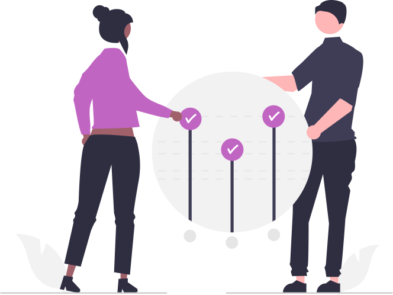
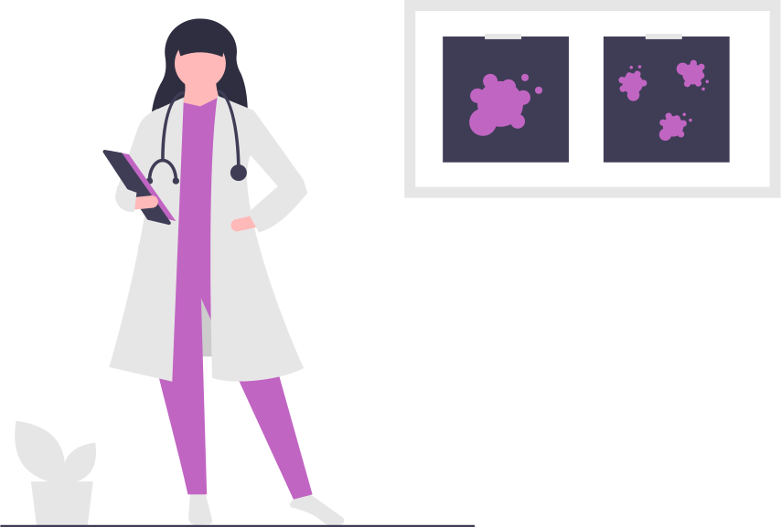
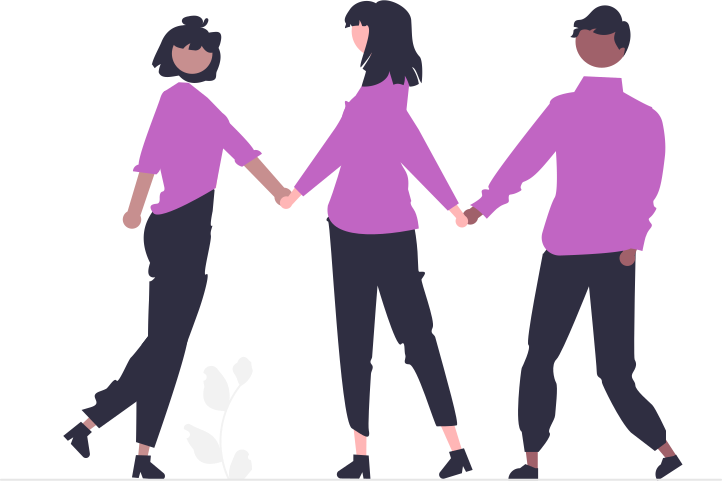

El cáncer es una enfermedad dura, no sólo desde el punto de vista físico para el cuerpo que debe enfrentar a las células malignas, los tratamientos y malestares; sino también para la psique. Los pacientes lidian con muchas emociones durante la enfermedad y necesitan acompañamiento psicológico en el proceso.
La psicooncología es el nombre que se le ha dado a la especialidad que aplica la psicología al ámbito oncológico. Los profesionales del área se encargan de atender a los pacientes con cáncer, a sus familiares y también a los profesionales de la salud que conviven con la enfermedad.
Preparación para la psicooncología
La psicooncología no requiere ninguna preparación especial. Es habitual que las personas que padecen algún cáncer presenten alguna alteración psicológica susceptible a ser tratado mediante psicooncología. De hecho, se calcula que entre el 50 y el 70% de los pacientes sufren algún trastorno, entre los que destacan los de ansiedad, adaptación y depresión, que si no se tratan correctamente pueden causar otros problemas emocionales o físicos.
Cuidados tras la intervención
Después de superar un cáncer puede ser necesario seguir requiriendo ayuda psicológica, debido a las secuelas o efectos secundarios del tratamiento sometido, además de ayudar a recuperar la normalidad. En casos de recaídas o, en el peor de los casos, pérdidas, la psicooncología también puede ayudar al paciente y a los familiares en el duelo.
Razones para acudir a la psicooncología
-
Acompañamiento profesional en el proceso
El cáncer es una enfermedad que se afronta como un proceso, por ello el psicooncólogo participa de todas las etapas, desde el diagnóstico, pasando por el tratamiento y en la remisión. Su objetivo es canalizar las tensiones y angustias psicológicas con las que lidian los pacientes de cáncer y sus familiares.
Reducción de los síntomas
El tratamiento psicológico reduce los síntomas emocionales asociados a la enfermedad como los niveles de ansiedad y los riesgos de padecer de depresión. La terapia es importante para aceptar los cambios físicos que experimentará el paciente así como acompañarlo durante la recuperación.
Mejora la calidad de vida
Las investigaciones han demostrado que la intervención psicológica del paciente y sus familiares durante la lucha contra el cáncer, incrementa significativamente su calidad de vida, incidiendo positivamente en el índice de supervivencia a la enfermedad.
Encontrar respuestas
Si bien el oncólogo se ocupa de explicar los temas médicos, el psicooncólogo es el encargado de ahondar en temas más profundos que tienen que ver con las angustias vitales del paciente como soportar el dolor o el miedo a la muerte. Cuando la terapia se lleva a cabo en familia, el grupo familiar estará más preparado para brindar el soporte emocional que el paciente necesita.